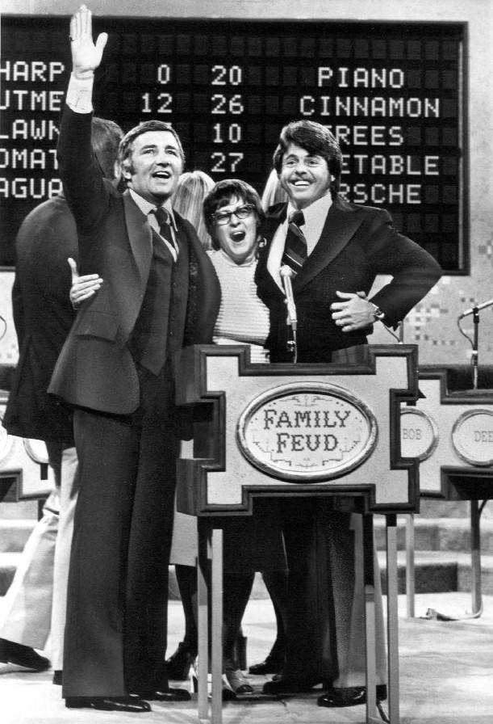
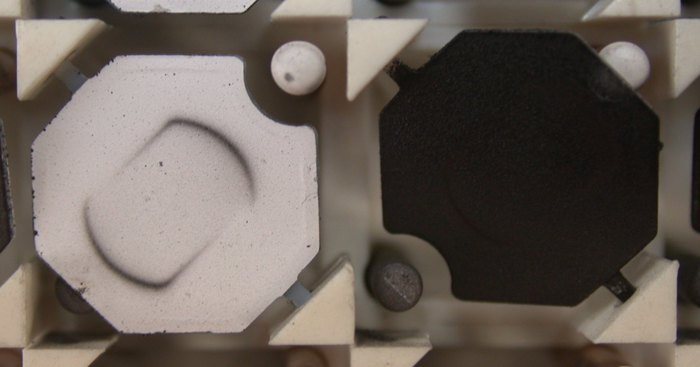

Ferranti-Packard Flip-Disc Display
An electromechanical dot matrix where each pixel is a metal disc flipped by a solenoid pulse and locked in place with no power at all

Overview
The Ferranti-Packard flip-disc (flip-dot) display is a purely electromechanical, bistable dot matrix. Each pixel is a small metal disc — black on one side, bright color on the other — mounted on an axle with a permanent magnet. A solenoid coil next to the pixel is pulsed with current, and the magnetic field flips the disc 180 degrees. Once flipped, the disc latches in place under its own magnet with no continuing power. The image is built from physically flipped discs, and it updates with a distinctive audible cascade of flipping elements. Patented by Kenyon Taylor in 1961, the technology found mass use in the 1970s-80s in transit destination signs, highway variable-message signs, stock exchange boards, and — most famously — the Family Feud answer board from 1976.
Deep dive
The flip-disc is bistable: a mechanical latch, not a refresh. A pixel holds its color state indefinitely without electricity, which made these displays ideal for low-power, always-on signage and for the huge information boards of stock exchanges. The sound of a screen full of discs flipping at once — a soft thunder of tiny latches — became part of the character of airports, train stations, and game shows.
The Family Feud answer board (1976) brought the flip-disc face-to-face with millions of viewers: a host tapped panels and letters flipped open in cascades. The same physical principle filled stock-exchange floors and mass-transit signage across the world. It is a display that is also a small mechanical performance — the output mechanism is the story.
Team & pioneers
- Kenyon Taylor / Ferranti-Packard. Inventor and manufacturer of the flip-disc display.
Media
